Etablissement d'un logo
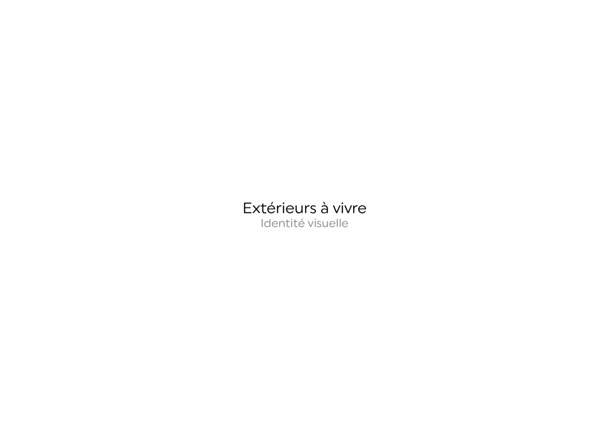 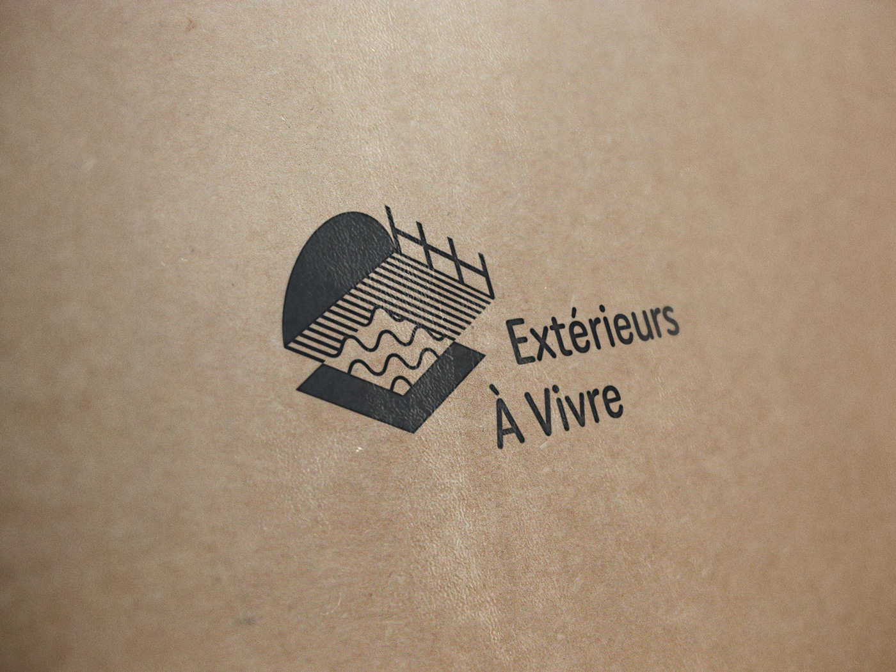 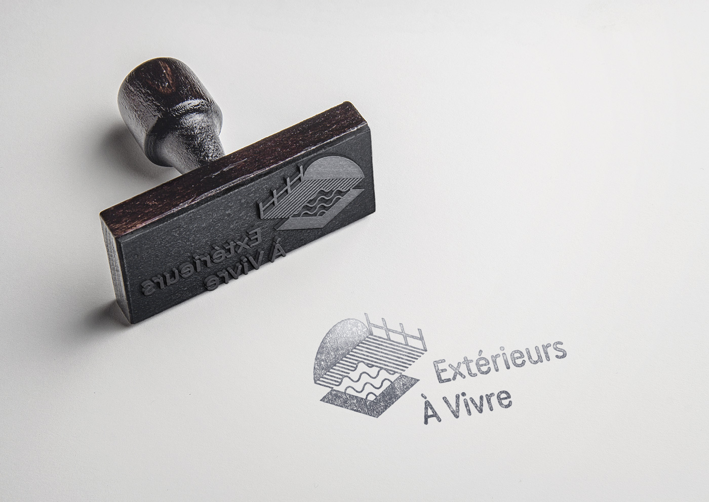 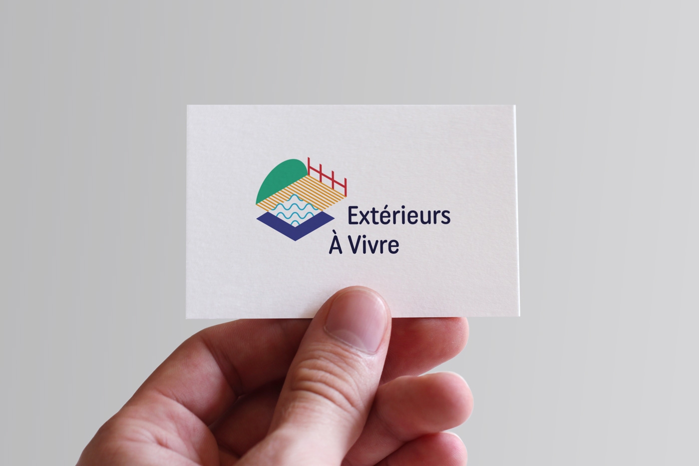 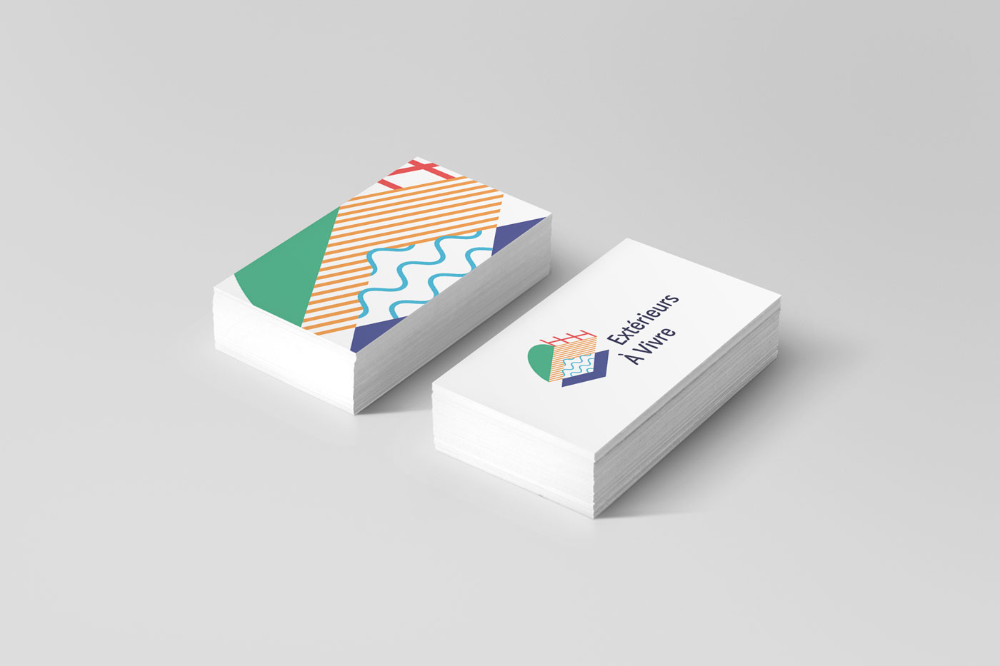Déclinaison de l'identité sur des supports de communications variés
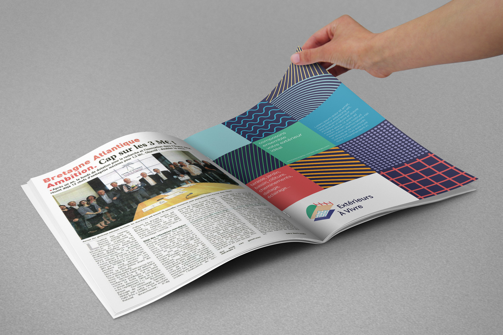 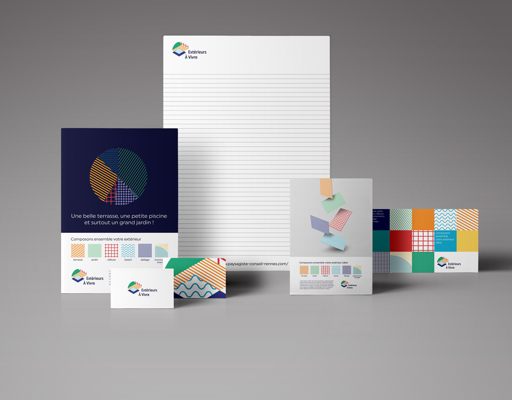 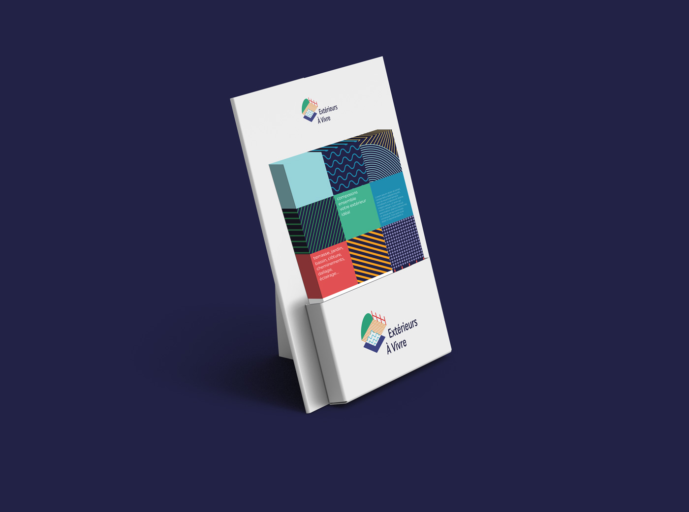 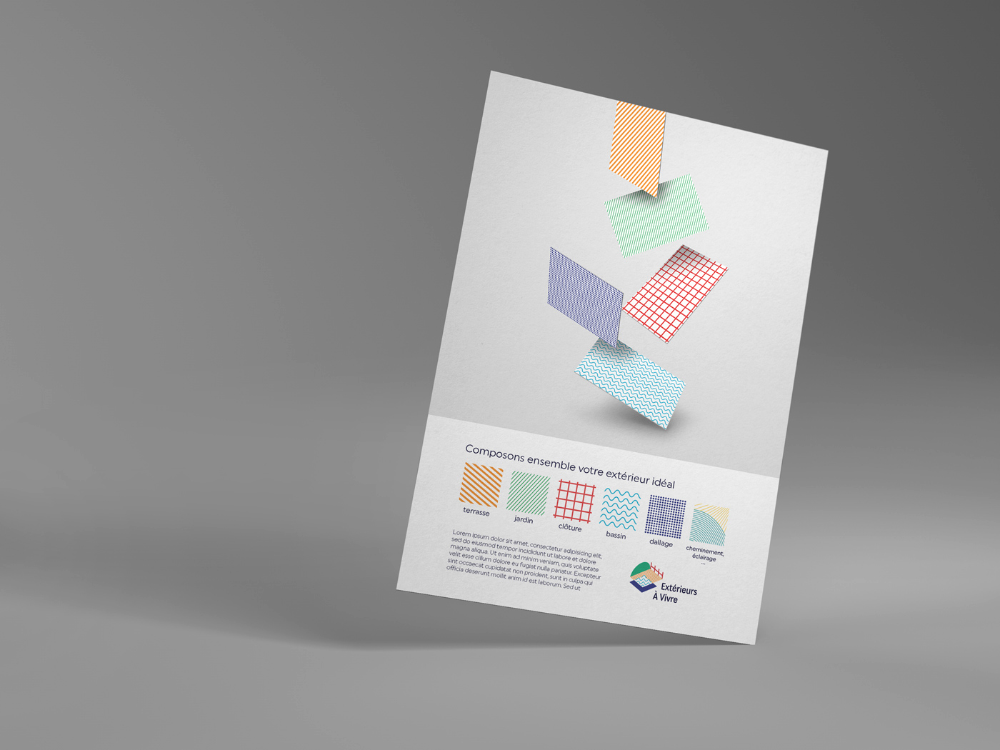 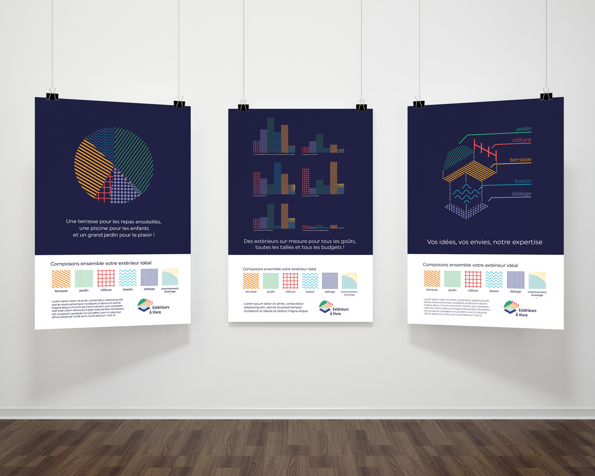 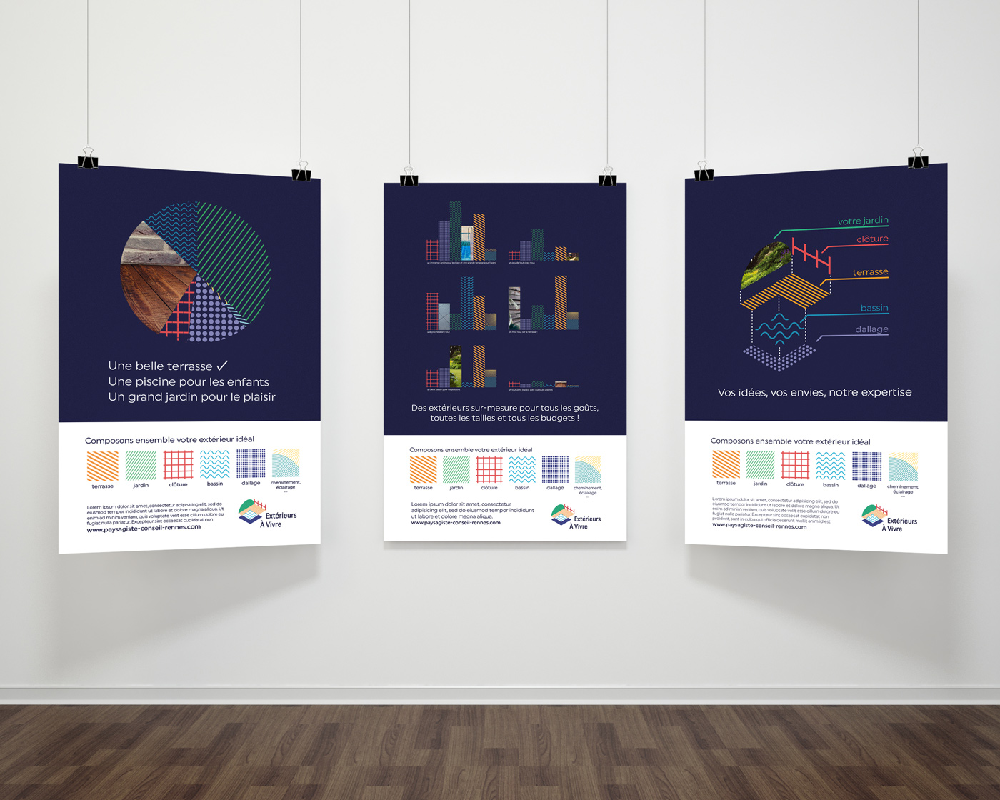


Extérieurs à Vivre
Proposition d'une nouvelle identité pour Extérieurs à Vivre, une entreprise de paysagisme.
Chaque composants d'un extérieur
est représenté par un motif. Cela permet à tout potentiel client de s'identifier et se projetter
tout en accentuant l'adaptabilité de l'entreprise à vos besoins. Cette identité met en
avant la rigeur de l'entreprise ainsi que son écoute envers les besoins du client. Le tout en illustrant
les différents domaines dans lesquels intervient l'entreprise.
· Identité Visuelle + supports de communication
· Projet réalisé dans le cadre d'un stage chez l'agence de communication rennaise YAM
· 2018